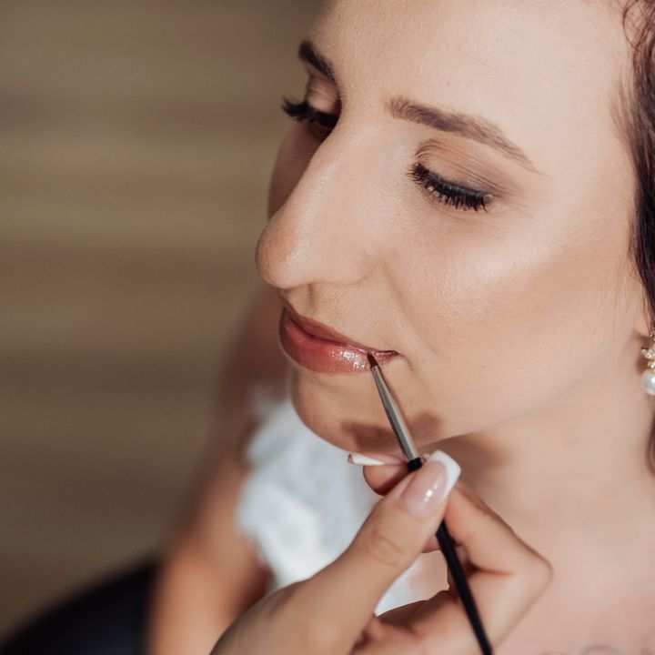
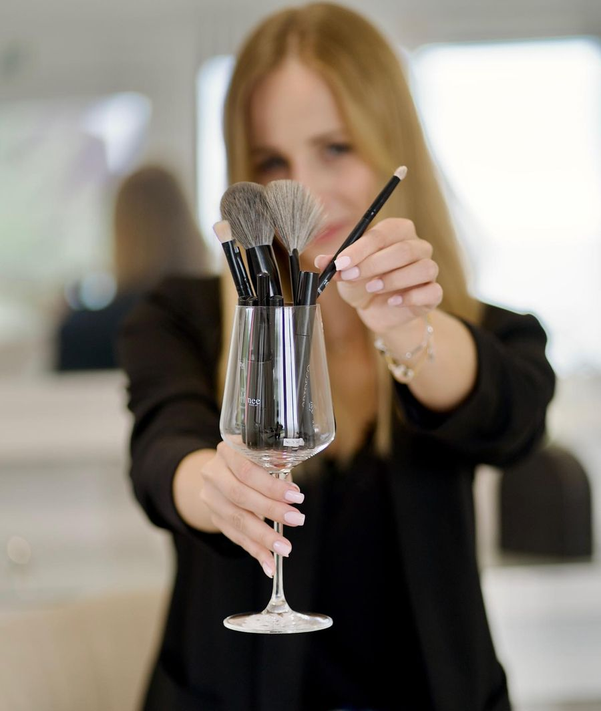
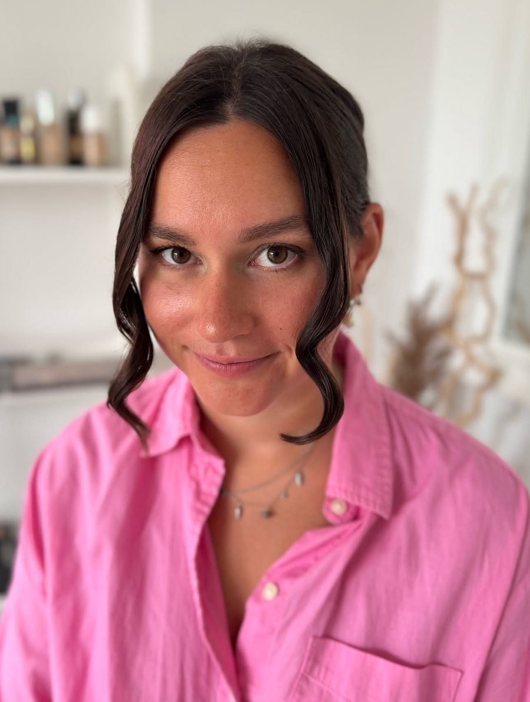
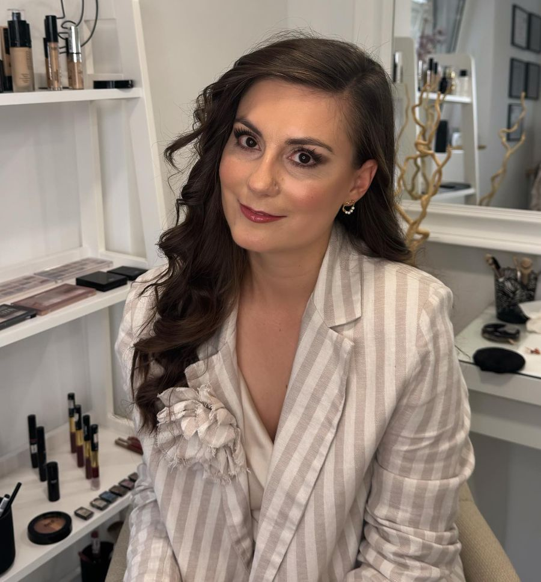
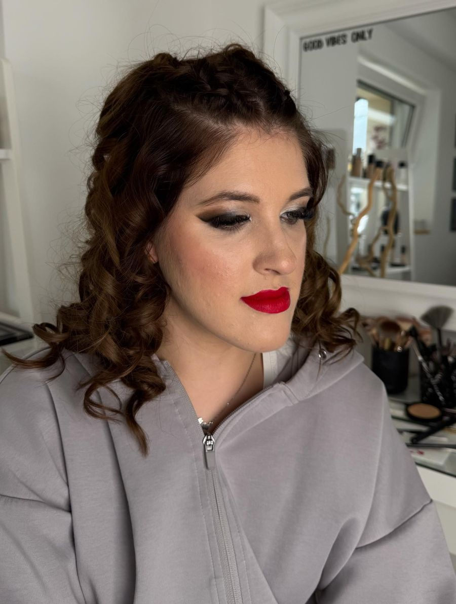
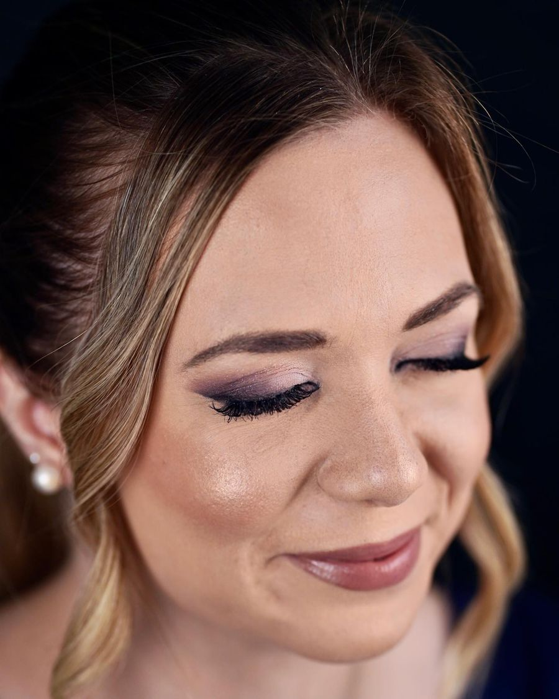
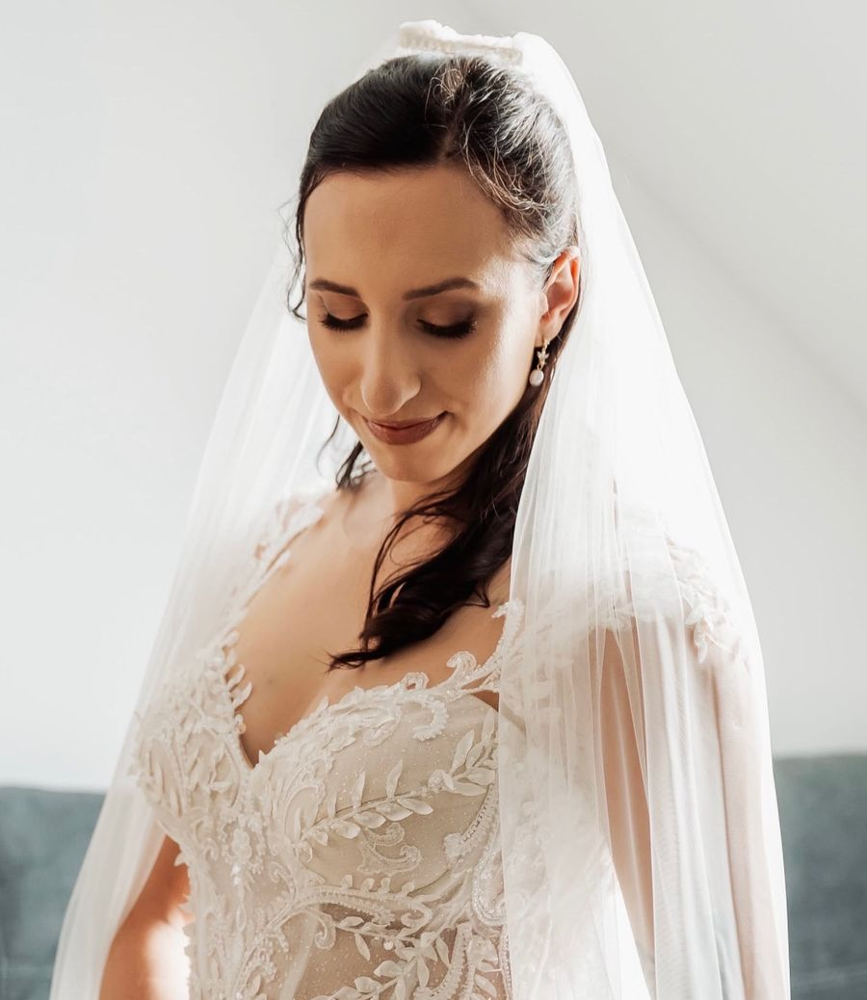
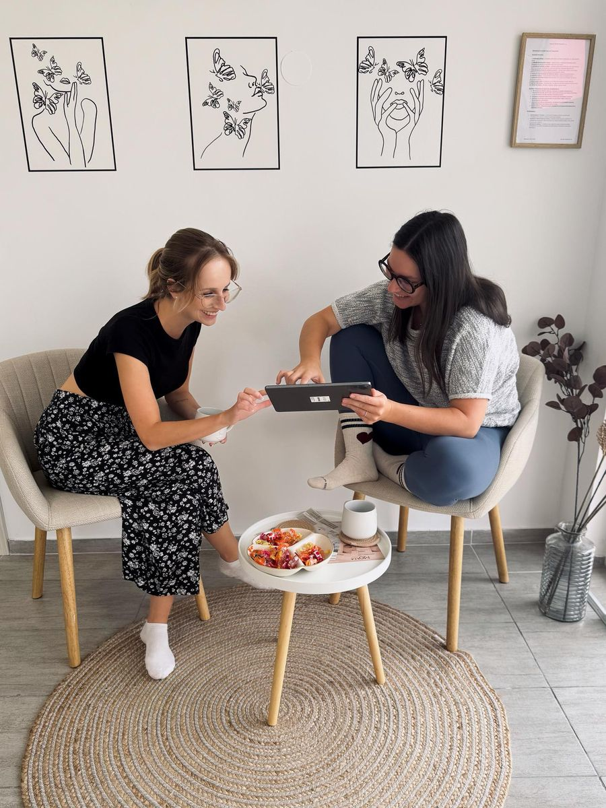
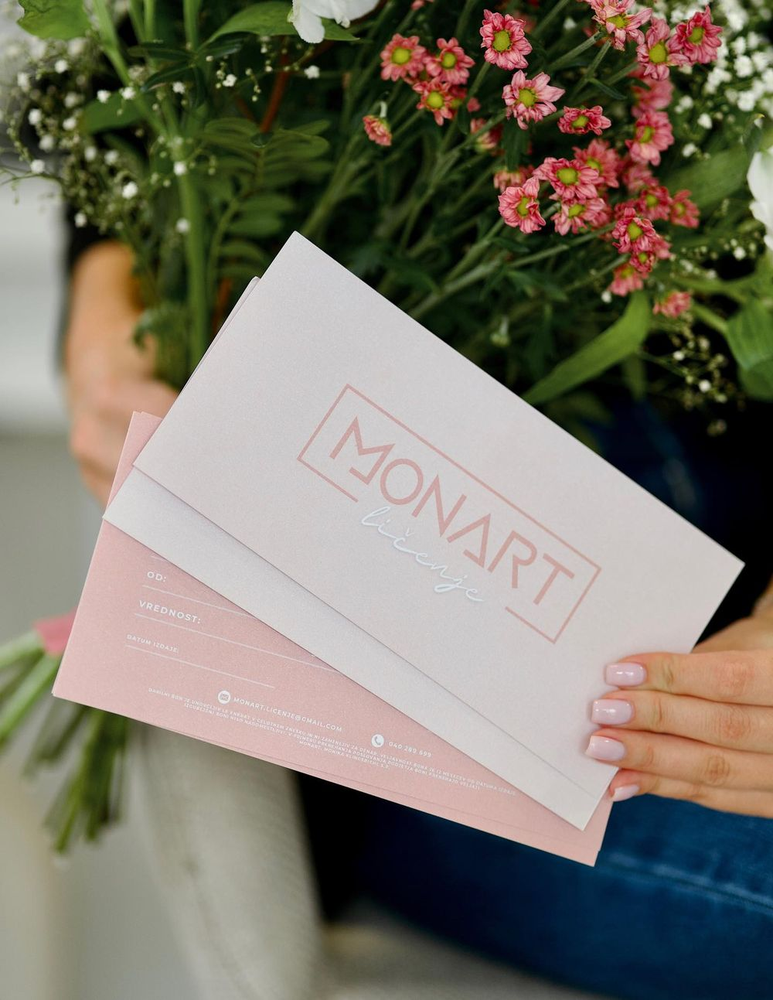

Ličenje za vse priložnosti · Benedikt
Ličenje, ki ne spremeni, ampak poudari.
Poročni sijaj, večerni glamur, poslovna eleganca in vsakdanja lepota. V studiu ali pri tebi doma.

O meni
Gre za občutek, natančnost in majhne detajle.
Pri ličenju ne gre zgolj za barve in čopiče. Gre za občutek, natančnost, harmonijo in tiste majhne detajle, ki naredijo veliko razliko.
Ni hitrih rešitev. So pogovor, zaupanje in slišane želje: skupaj pogledava predloge in ustvariva tisto, kar si res želiš. Ker je najlepši make-up tisti, v katerem se počutiš dobro.
- Studio v Benediktu
- Ličenje tudi pri tebi doma
- Darilni boni
Vrste ličenja
Za vsako priložnost svoj odtenek.
Izberi priložnost v paleti.






Naravno ličenje
Ko si želiš, da se skoraj ne vidi, da si naličena. Lahkotna podlaga, nežni topli toni in ravno toliko ličil, da poudarijo tvojo naravno lepoto. Po želji tudi brez pudra in podlage.
Poslovno in dnevno
Naraven, eleganten videz, popoln za vsak dan ali poseben trenutek. Svež ten, mehke linije in lahkoten sijaj, ki traja ves dan.
Večerno in svečano
Ko je čas za več glamurja: izrazite oči, sijoča polt in ustnice, ki zaključijo videz. Od klasične rdeče šminke do srebrnih in modrih odtenkov na vekah.
Maturantsko ličenje
Za maturantski ples ostani zvesta sebi, le v svoji najlepši različici. Ličenje, ki poudari obraz in ostane obstojno od prve slike do zadnjega plesa.
Poročno ličenje
Poročni make-up, ki ne spremeni, ampak poudari. Nežen in brezčasen videz, ki poudari tvojo naravno lepoto in notranji sijaj. Naličim te v studiu ali pri tebi doma.
Poskusno ličenje
Vsak make-up se začne z idejo. Pred velikim dnem videz najprej preizkusiva: skupaj pogledava predloge in poiščeva tisto, kar si res želiš.
Cenik: dopolnimo Za ceno in prost termin me pokliči ali mi piši.
Videzi
Vsak videz v dveh pogledih.
Preklopi med vekami in pogledom ali se dotakni fotografije za povečavo.
Nežni toni, mehak glamur Bež-zlati odtenki, bordo ustnice Nežen glamur Roza toni, poudarjene oči Maturantsko v roza tonih Sijoča podlaga, senčene veke Večerno v srebrni in črni Rose gold soft glam
Kako poteka
Od ideje do zadnjega detajla.
-
Pogovor in ideja
Povej mi, za kakšno priložnost gre in kaj ti je všeč. Skupaj pogledava predloge.
-
Poskusno ličenje
Če želiš, videz pred velikim dnem najprej preizkusiva, da veš, kaj te čaka.
-
Tvoj dan
Naličim te v studiu v Benediktu ali pridem k tebi domov. Vsaka poteza čopiča šteje, vsaka barva je skrbno izbrana.
V studiu ali na terenu
Svetloba, ličila, kreativnost: studio MONART je v Benediktu. Za poroko, maturantski ples ali slavje pa pridem tudi k tebi, saj na terenu nastajajo lepi spomini.
Studio MONART, Benedikt
Studio v Benediktu Svetloba, ličila, kreativnost Zadnji detajli: ustnice Čisti in pripravljeni čopiči
Zrela koža
Zrela koža zasije z malo.
Tudi koža, ki ni navajena ličil, ne potrebuje veliko. Lahkotna podlaga, nežni toni in naraven videz, brez teže.

Darilni boni
Podari trenutek, ne stvar.
Včasih je najlepše darilo občutek. Darilni bon ni le lepotni tretma: je čas, ko se ženska počuti samozavestno, lepa in svoja.
- Velja 12 mesecev od datuma izdaje.
- Unovčljiv je enkrat, v celotnem znesku.
- Ni zamenljiv za denar.
Pokliči za termin
040 289 699Kontakt
Fokus je nate.
Za več informacij in prost termin me pokliči, piši na Instagram ali pošlji e-pošto.
- Studio
- Benedikt Točen naslov: dopolnimo
- Delovni čas
- Delovni čas: dopolnimo